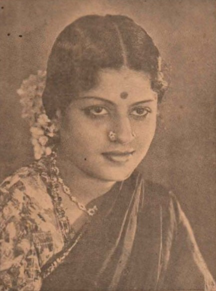

A Musical Beginning
M. S. Subbulakshmi was born in Madurai and grew up in a family deeply connected with music.
A TRIBUTE TO A MUSICAL LEGEND
The Voice That Became Divine
A timeless voice that carried the beauty of Carnatic music from the concert halls of India to the world.

HER STORY
Born on 16 September 1916 in Madurai, M. S. Subbulakshmi grew up surrounded by music. Her mother, Shanmukhavadivu, was a skilled veena player, and music became an important part of her early life. Subbulakshmi began performing at a remarkably young age and soon established herself as a gifted Carnatic vocalist.
Her extraordinary voice and disciplined musical training helped her rise to prominence during the early decades of the twentieth century. Although deeply rooted in the traditions of Carnatic music, her singing reached audiences far beyond the classical concert stage. She also appeared in films, including Sevasadanam and Meera, bringing her artistry to an even wider audience.
Subbulakshmi's music eventually crossed national boundaries. In 1966, she became the first Indian musician to perform at the United Nations General Assembly. Her concerts and recordings introduced listeners around the world to the depth and spiritual character of Indian classical music.
Throughout her career, she received some of India's highest honours as well as international recognition. From the Ramon Magsaysay Award to the Bharat Ratna, her achievements reflected the extraordinary impact of her musical journey. She passed away in Chennai on 11 December 2004, but her recordings and influence continue to inspire generations.
THE JOURNEY
M. S. Subbulakshmi was born in Madurai and grew up in a family deeply connected with music.
Her powerful performances established her as one of the leading voices in Carnatic music.
Her portrayal of Meera brought her music and devotional singing to a much wider audience.
She performed at the United Nations General Assembly, taking Indian classical music to an international stage.
She received the Ramon Magsaysay Award, becoming the first Indian musician to receive the honour.
She was awarded the Bharat Ratna, India's highest civilian honour and a landmark recognition of her contribution to music.
Indian music is oriented solely to the end of divine communication.
HER LEGACY
She became one of the most celebrated voices of South Indian classical music.
Her performances introduced Indian classical music to audiences across the world.
Her recordings continue to preserve and inspire appreciation for India's rich musical heritage.